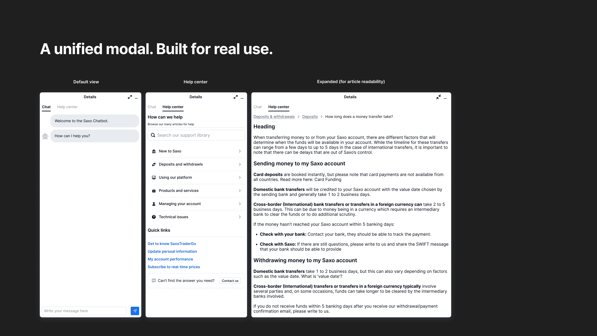
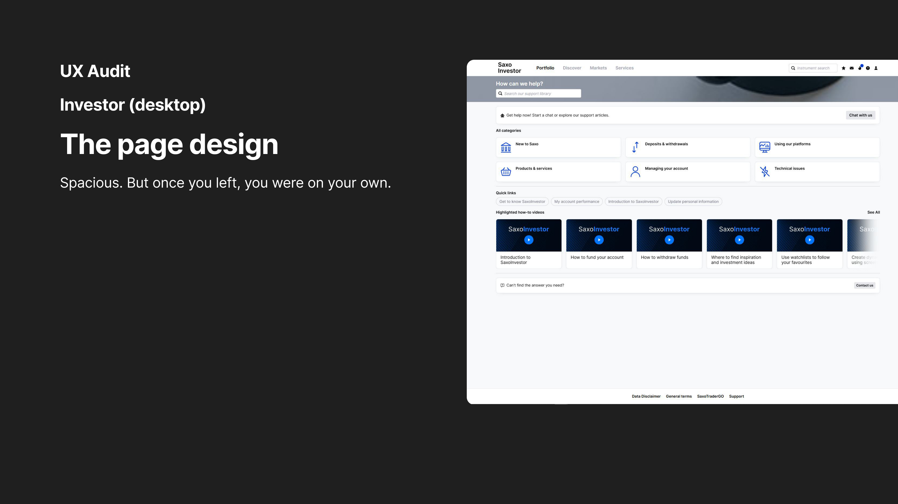
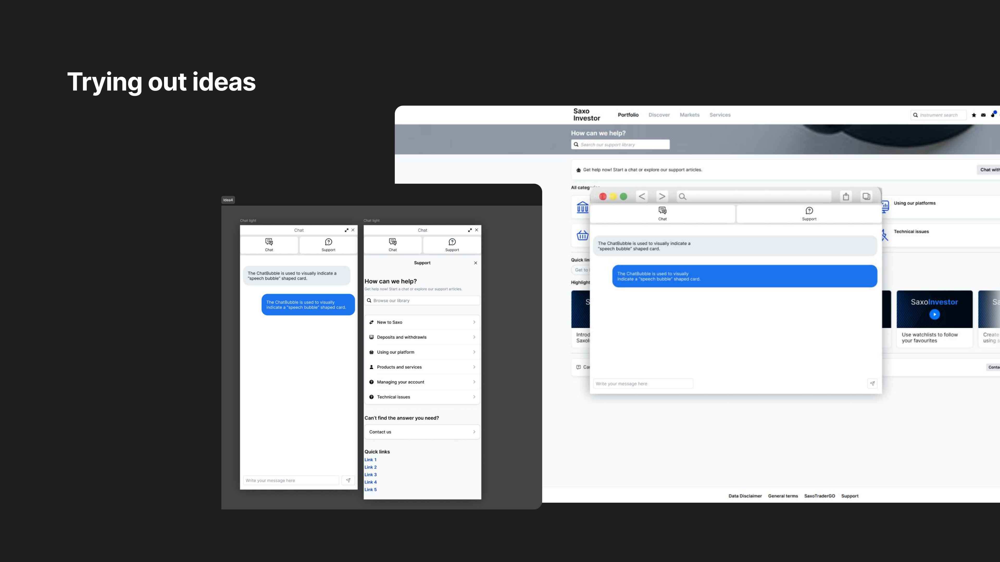
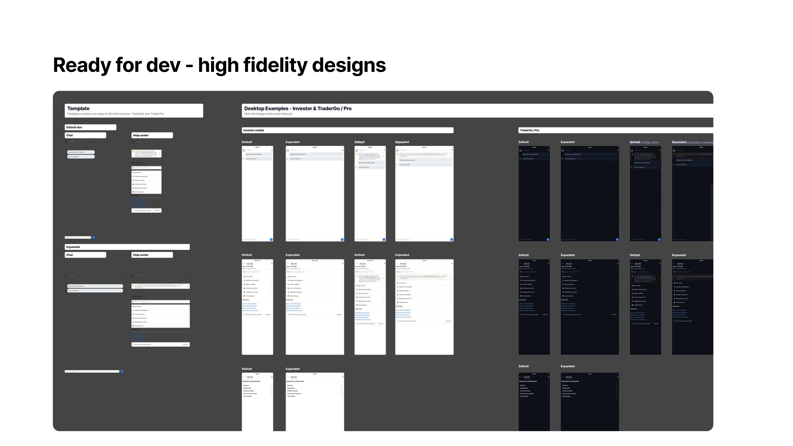

Saxo Bank upgraded its AI chatbot and wanted it to be the only support channel. I pushed back — and the results proved it was the right call.

Final solution — unified help modal across Saxo platforms
The directive was to make the new AI chatbot the default support channel and remove everything else. Before opening Figma, I needed to know if that was actually what users wanted.
In 12 user interviews, a pattern emerged immediately: support behaviour split three ways. Some users went straight to chat. Others wanted articles. Others — especially on high-stakes actions like money movement — wanted a human. No single channel dominated, and several users said they'd lose trust in the platform if chatbot was their only option.
"The chatbot-only idea was tested. The data didn't support it."
The competitive picture reinforced this. Intercom and Binance — both heavily invested in AI support — still offered multi-channel help. Neither had gone chatbot-only.

UX audit — Saxo Investor desktop vs TraderGO modal
Investor had a full help page — spacious, but navigating to it meant leaving your workflow entirely. TraderGO had a persistent modal — always visible, but stateless. Minimise it and your conversation was gone. Mobile inherited both problems on a smaller screen.
The fix was a single modal pattern that worked across all three platforms: chat-first, but with the help centre one tap away. Resizable, minimisable, with state persistence — your conversation stays with you.

Wireframe explorations — defining the modal pattern
I ran a mini workshop to lock the design requirements before touching hi-fi: preserve task context, reduce access friction, stay within the design system, keep support options intact, and build something that could scale as the chatbot improved. Then wireframes, in-house testing, and an interactive prototype tested with 8 participants in a guerrilla format.
Three weeks from kickoff to handoff. One template, three platforms, full specs and design system documentation.

Final hi-fi — all states across Investor, TraderGO and mobile
Resisting the chatbot-only brief was the right call — and the results validated it. The redesign didn't cannibalise other support channels, it grew total self-service volume. More users getting answers without needing to escalate.
What I'd do differently: build in a post-launch research checkpoint at 60 days. We knew users were willing to try the chatbot. We didn't know whether they'd keep choosing it for complex issues over time. That gap is still open.